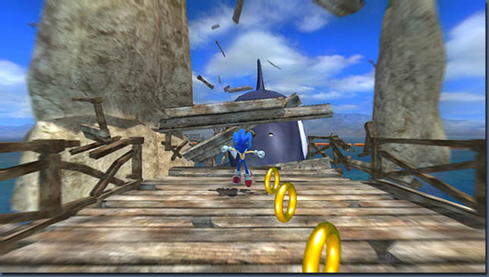

みなさんこんにちは。『SONIC THE HEDGEHOG』がついに発売となりました。ボリュームも大きいのでクリアに時間がかかるかと思いますが、楽しんでもらえるとうれしいです。
さて、今回の話題は、アクションステージです。今回、ソニック、シャドウ、シルバーでキャラクターアクションが違いますが、アクションステージもそれと同じようにそれぞれ違った印象を感じてもらえるように、コースやギミックをいろいろと用意しています。
各キャラクターごとにお勧めのステージをご紹介します。
ソニック編でのお勧めステージは、KINGDOM VOLLEY。今年のＥ３というアメリカのショウで初めてソニックを披露したときに登場させたステージがここなのですが、最初のエリアでは多岐にわたる分岐を楽しめ、高速ステージでは、十戒をイメージしたビジュアルが登場します。それ以外にもソレアナの古城が登場したり、鷹に乗ったりといろいろなギミック満載のステージです。ソニックの様々なアクションを楽しめるステージ構成になっています。
シャドウ篇では、WAVE OCEANでしょうか。このステージでは、グライダー、バギー、ホバービークルなど３種類の乗り物が登場し、敵もたくさん出てきます。シャドウの乗り物と戦闘という２つの遊びを十二分に楽しめるところがいいですね。
最後に、シルバー編ではCRISIS CITYなどがお勧めです。これも最初にＥ３で披露したステージなのですが、タクシーに乗って移動したり、道路を壊して給水タンクを転がしたりといった物理的な遊びをいろいろと工夫できるところが楽しいステージになっています。
ほかにも楽しいステージはたくさんあるのですが、お勧めはこんな感じです。
ソニック編の最初のステージWAVE OCEANで登場するシャチを見た方の中には、98年発売の『ソニックアドベンチャー』を思い出された方もいらっしゃるかと思います。当時私はセガに入って２年目ぐらいだったと思いますが、そのとき担当したステージにシャチを登場させました。
今回、シリーズ総括ということもあり、自分の原点回帰という意味でも、同じような形でシャチを登場させています。『ソニックアドベンチャー』をプレイされた方、懐かしんでもらえましたでしょうか？

アドベンチャー１でおなじみだったシャチです
ということで今回はアクションステージのお話しをしました。
次回は、タウンステージについてお話しします。

1997年セガ入社
『ソニックＲ』、『ソニックアドベンチャー』に参加後、『サンバＤＥアミーゴ』『ジャイアントエッグ』などのディレクターを務める。